浮点四则与算术逻辑单元 链接到标题
浮点加减运算 链接到标题
$$ x = S_x \times 2^t, \quad y = S_y \times 2^t $$
对阶 链接到标题
- 求阶差
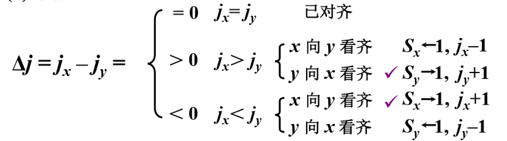
- 对阶就是判断两个浮点数的值是否相同，如果两数的阶码相同，直接可以加数值部分，即可完成相加，如果阶码不同，则需要对其进行对阶。
- 对阶原则，小阶向大阶看齐 如果大阶向小阶看齐，需要对其进行左移，容易将高位的 1 丢失，引发错误。而小阶向大阶看齐，需要对其进行右移，只会影响数据的精度，不会影响具体的数据大小
例如：$x=0.1101×2^{01},y=(−0.1010)×2^{11}$,求$x+y$
- 对阶
i. 求阶差：$[\Delta I]_{i\frac{1}{2}} = [I_s]_{i\frac{1}{2}}^k - [I_s]_{i\frac{1}{2}}^{k-1} = 00.01 - 11.10 = -2$，$f_x + 2$
ii. 对阶后 $[x]_{i\frac{1}{2}} = 00.11;00.0011$
- 尾数求和：
$[S_x]_{i\frac{1}{2}} + [S_y]_{i\frac{1}{2}} = 00.0011 + 11.0110 = 11.1001$
所以 $[x+y]_{i\frac{1}{2}} = 00.11;11.1001$
$$ -[y_s]_{i\frac{1}{2}} \text{ 实际上等于 } [-f_s]_{i\frac{1}{2}} $$
规格化 链接到标题
- 规格化数的定义，
$r=2, \quad \frac{1}{2} \leq |S| < 1$ - 规格化数的判断
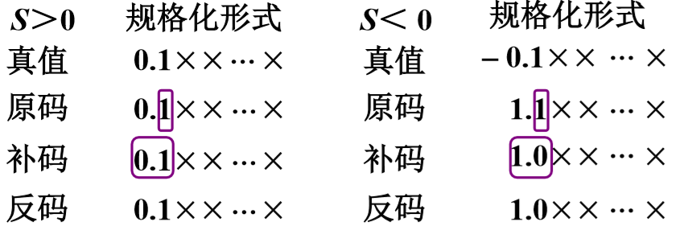
原码: 不论正数、负数，第一数位为 1 补码: 符号位和第一数位不同
特例：
-
$[-1/2]_{补}$不是规格化的数$S = -1/2 = -0.100...0$$[S]_{原} = 1.100...0$$[S]_{补} = 1.100...0$ -
$[-1]_{补}$是规格化的数$S = -1$$[S]_{补} = 1.000...0$
左规 链接到标题
尾数左移一位，阶码-1，直到数符和第一数位不同为止
例：$[x+y]_{补} = 00,11;11.1001$
左规后$[x+y]_{补} = 00,10;11.0010$
则 $x+y=(-0.1110)\times2^{10}$
右规 链接到标题
当尾数溢出(>1)时，需要右规
即尾数出现 01.XX 或 10.XX 时，尾数右移一位，阶码 +1
例：$x = 0.1101 \times 2^{10}, y = 0.1011 \times 2^{01}$，求$x+y$
除阶符、数符外，阶码取 3 位，尾数取 6 位
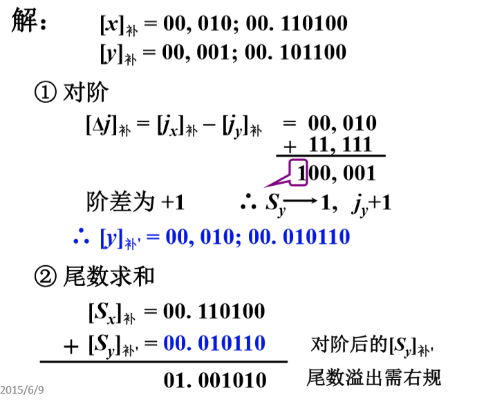
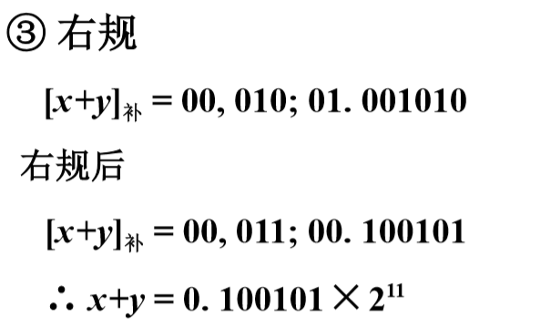
舍入 链接到标题
在对阶和右规过程中，可能出现尾数末位丢失，引起误差，需考虑舍入。
- 0 舍 1 入法，如果末位是 0 丢弃，如果是 1 进位
- 恒置”1”法，末位始终置为 1
例如： $x=(−5/8)×2^{−5},y=(7/8)×2^{−4}$
除阶符、数符外，阶码取 3 位，尾数取 6 位。
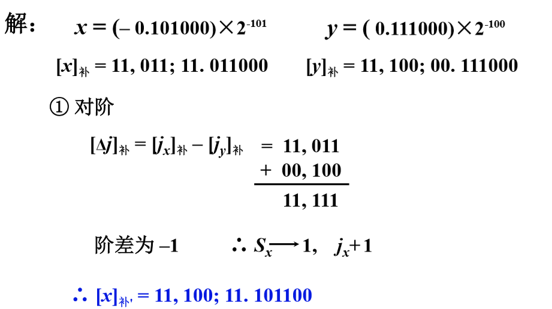
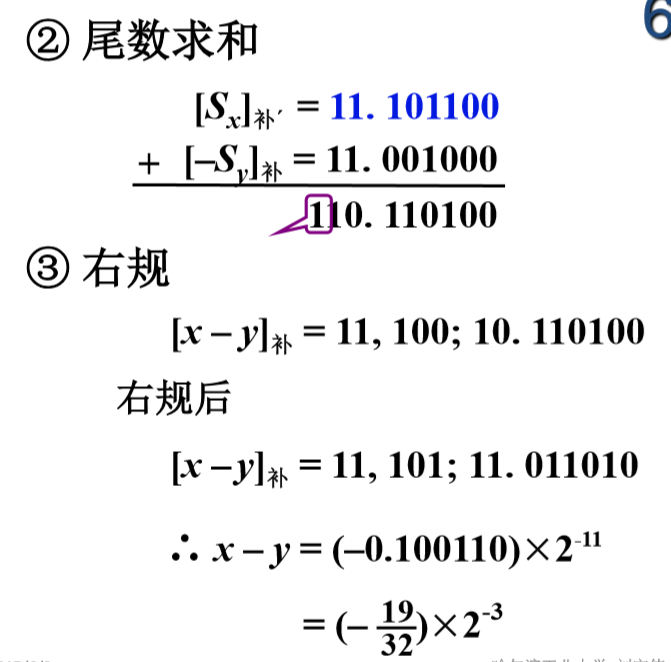
溢出判断 链接到标题
设机器数为补码，尾数为规格化形式，并假设阶符取 2 位，阶码的数值部分取 7 位，数符取 2 位，尾数取 n 位，则该补码在数轴上的表示为
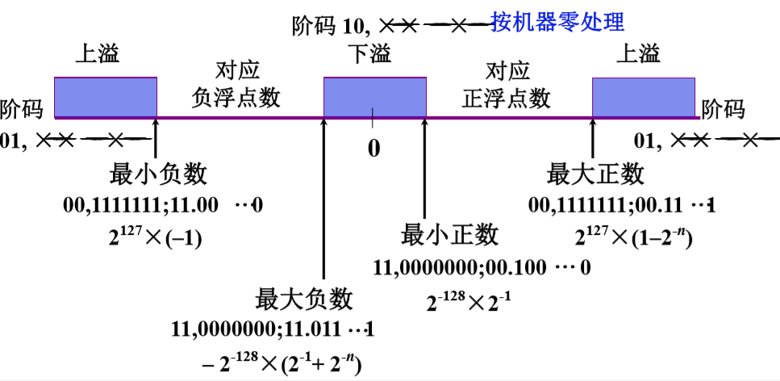
算术逻辑单元 链接到标题
ALU 电路 链接到标题
组合逻辑电路，_Ki_不同取值, _Fi_不同
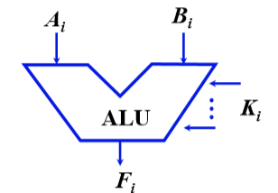
四位 ALU 74181，M=0 算术运算，M=1 逻辑运算，
$S_3 - S_0$不同取值，可做不同运算。
快速进位链 链接到标题
- 并行加法器
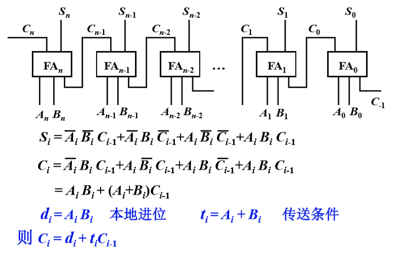
- 串行进位链
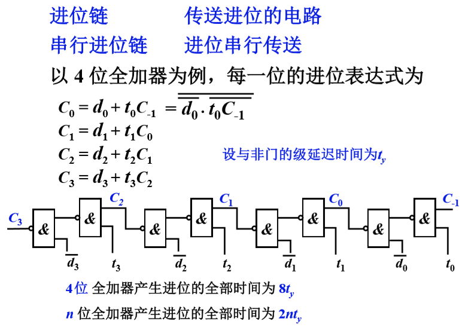
- 并行进位链(先行进位，跳跃进位)
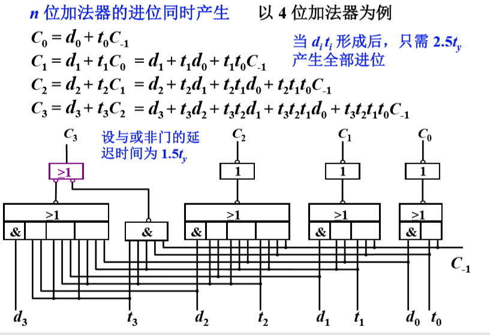
- 单重分组跳跃进位链 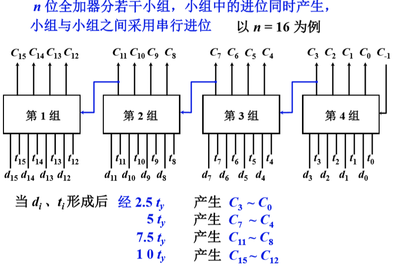
- 双重分组跳跃进位链 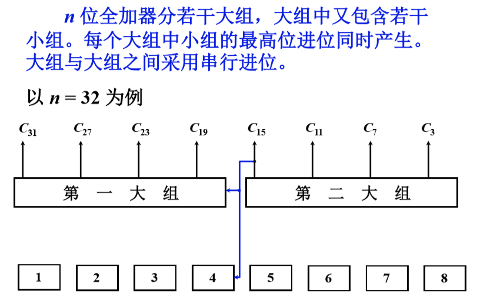
- 双重分组跳跃进位链，大组进位分析 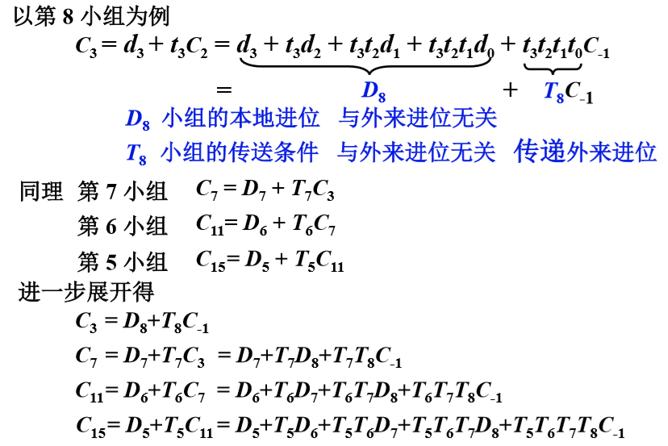
- 双重分组跳跃进位链的大组进位线路 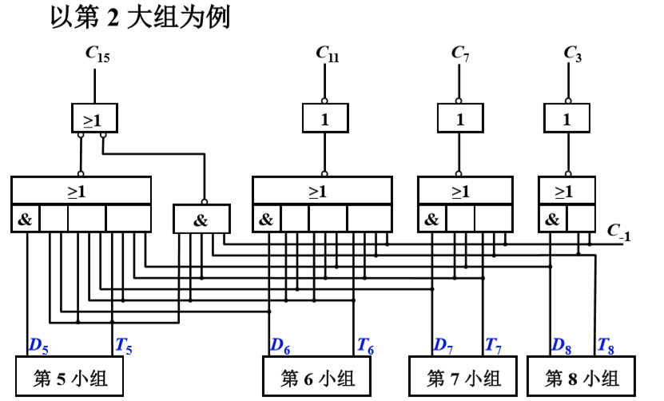
- 双重分组跳跃进位链的小组进位线路 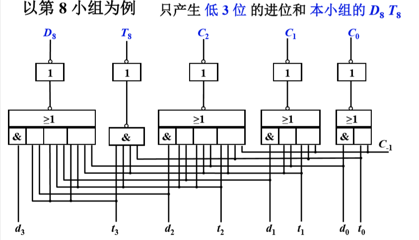
- n=16 双重分组跳跃进位链 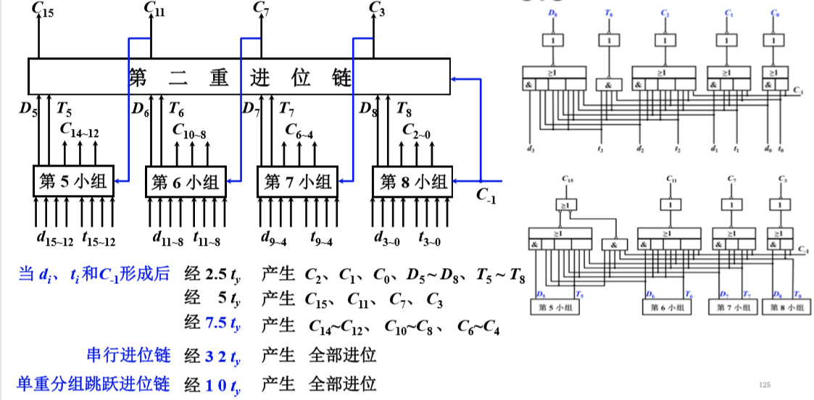
- n=32 双重分组跳跃进位链
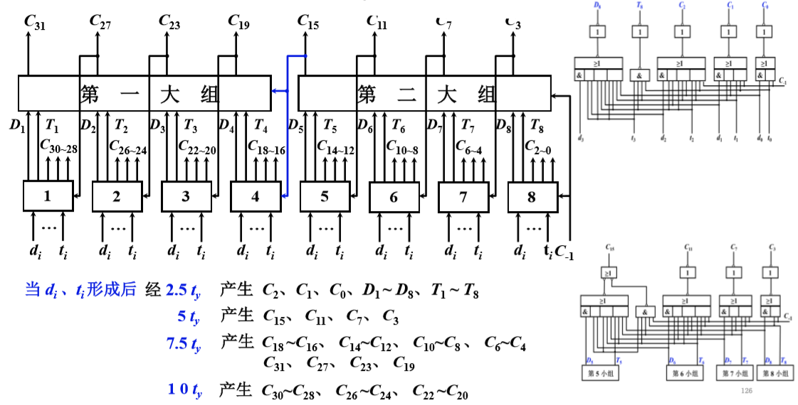